Introduction
Canada has beautiful nature and modern cities. In this project, I took six photos to show different views of Canada. I used six photography techniques to make my photos more interesting. I also edited each photo to improve its colours, lighting, and composition.
1. Rule of Thirds
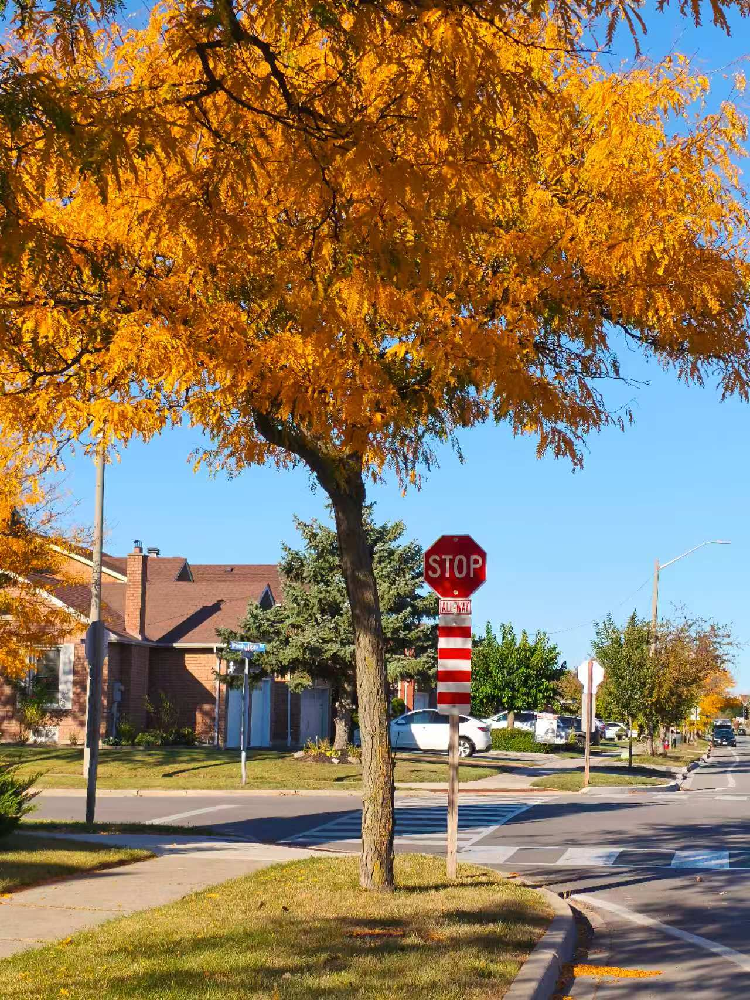
Original
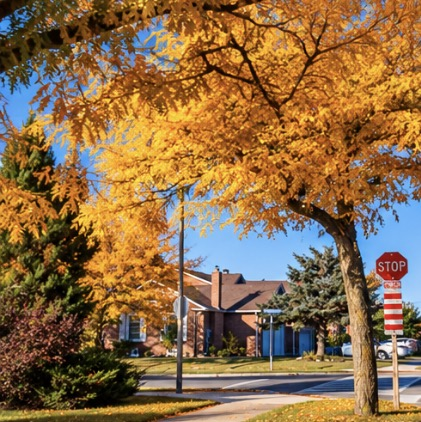
Edited
I placed the tree near the right third of the photo. This draws attention to the golden leaves and creates a natural view. I cropped the photo to remove extra space and make the tree stand out.
2. Leading Lines
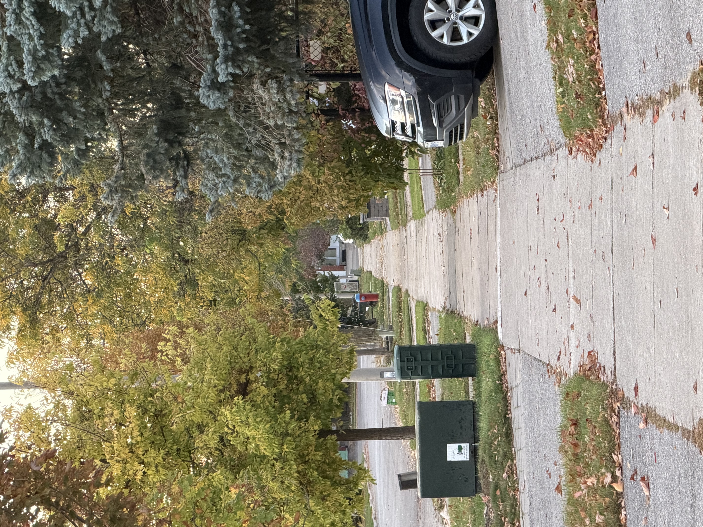
Original
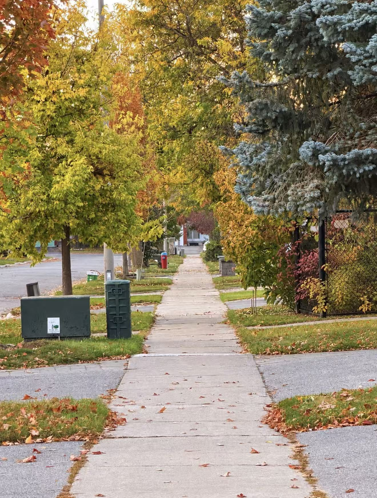
Edited
The sidewalk creates leading lines that guide the viewer's eyes into the distance. The trees on both sides make the scene look warm and peaceful. I removed the car and made the autumn colours brighter to help the viewer focus on the path.
3. Framing
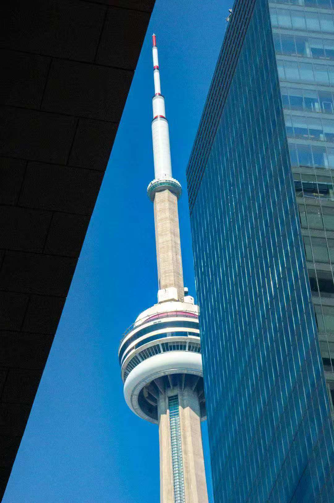
Original
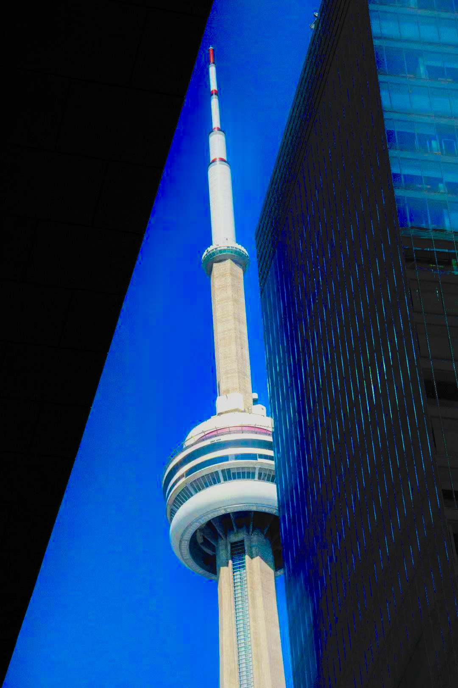
Edited
The buildings on both sides create a frame around the CN Tower. This draws attention to the tower and makes it the main subject. I increased the contrast and made the sky bluer to help the tower stand out more clearly.
4. Balance
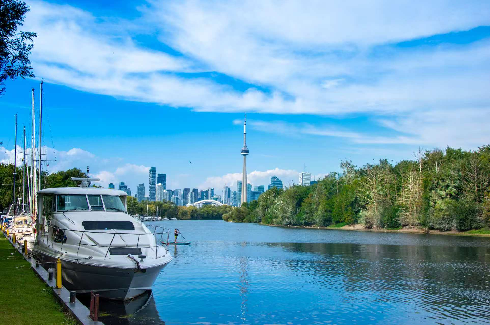
Original
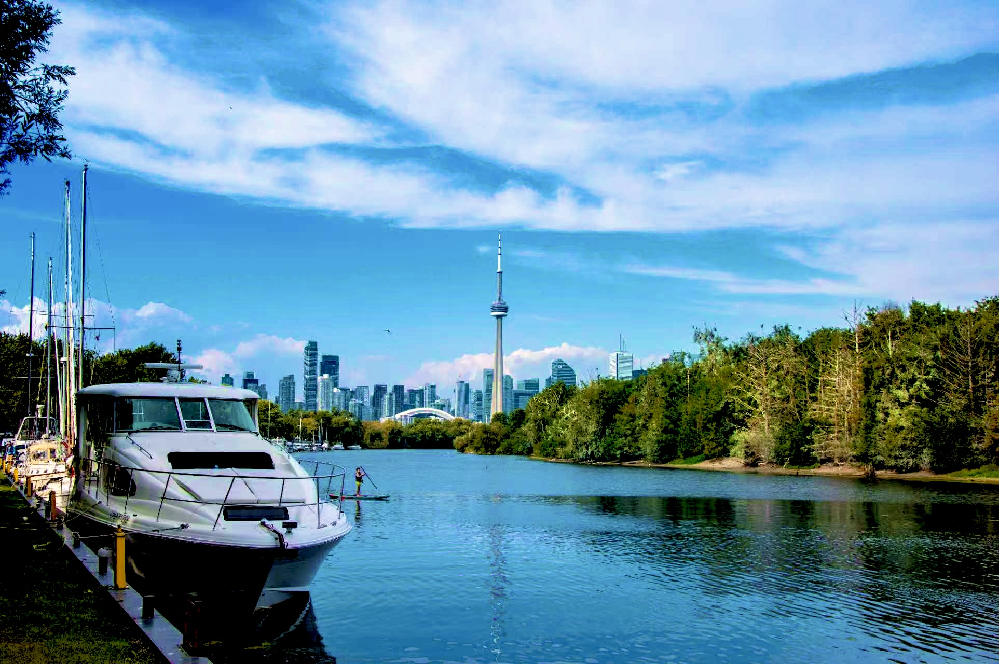
Edited
The large boat on the left balances the trees and open water on the right. This creates asymmetrical balance and makes the view feel calm. I increased the colour and contrast to make the boat, water, and skyline look clearer.
5. Contrast
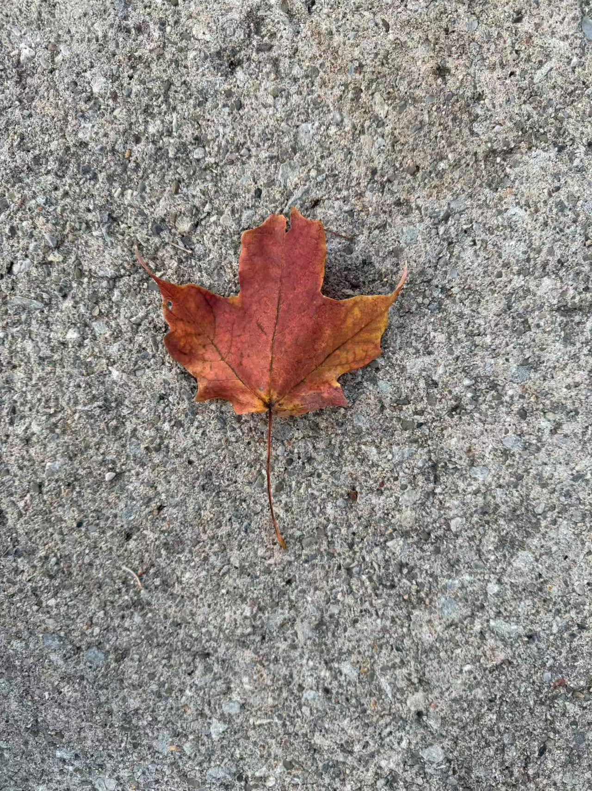
Original
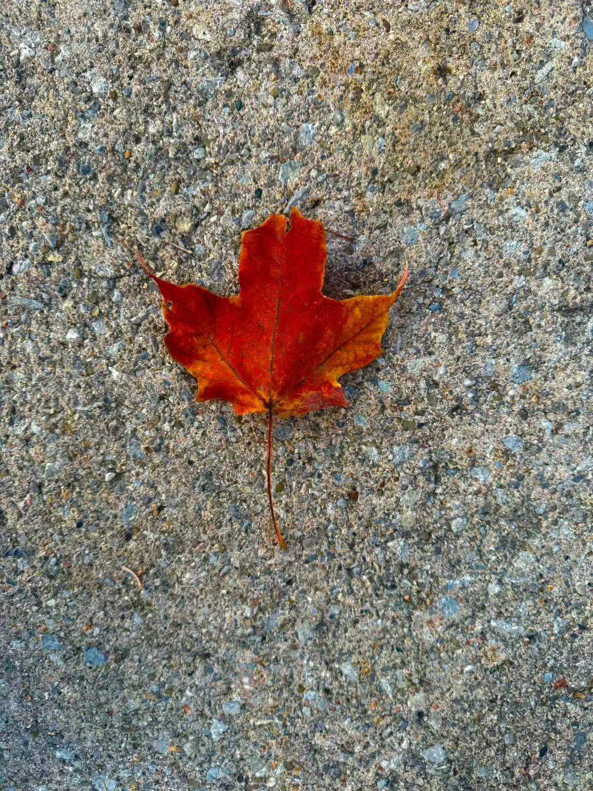
Edited
The bright red maple leaf stands out against the grey ground. This colour contrast makes the leaf the main subject and attracts attention. I increased the saturation and contrast to make the red colour stronger and show the beauty of autumn.
6. Colour
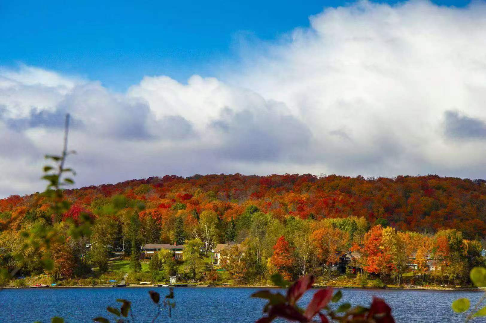
Original
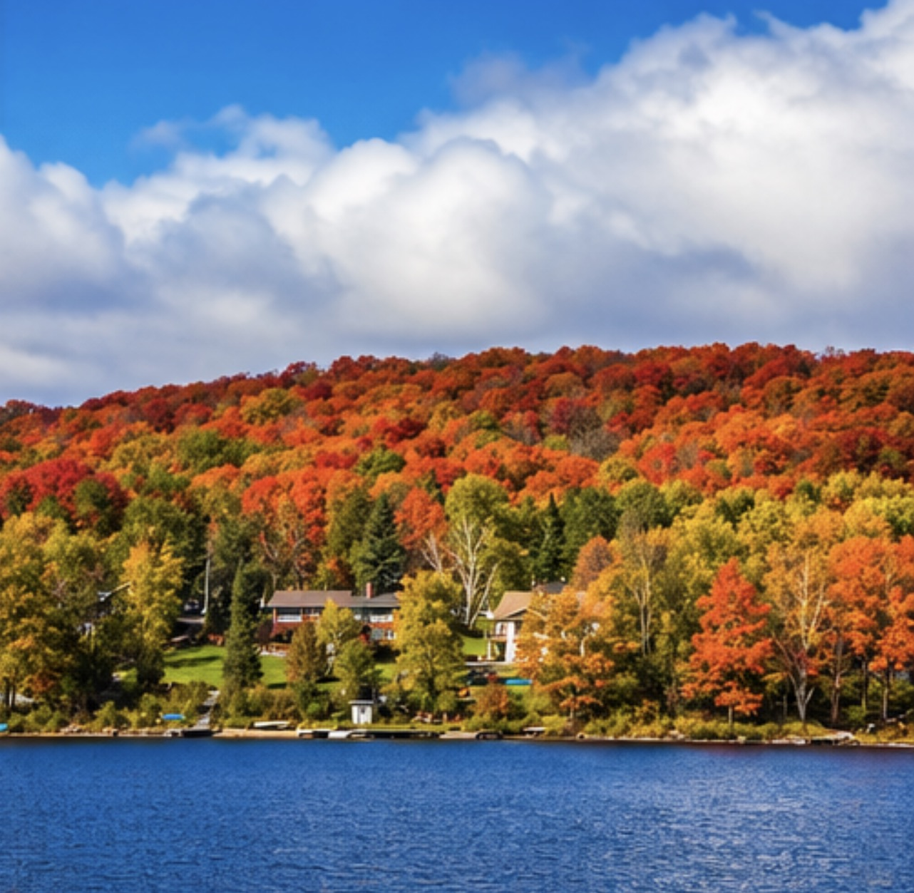
Edited
The red, orange, yellow, and green trees show the beauty of autumn in Canada. These bright colours attract attention and make the landscape interesting. I cropped the photo to remove distractions and help the viewer focus on the colourful forest and lake.
My Reflection
I think my strongest photo is Photo 3, Framing. The two buildings create a clear frame around the CN Tower. This makes the tower stand out and shows the beauty of Toronto.
Editing improved this photo because I increased the contrast and made the sky bluer. The tower became clearer, and the frame looked stronger. This helps the viewer focus on the main subject.
If I did this project again, I would take photos at different times of the day. Softer sunlight could show more details in the buildings and make the photo look more natural. I also learned that small changes can make a big difference in photography.